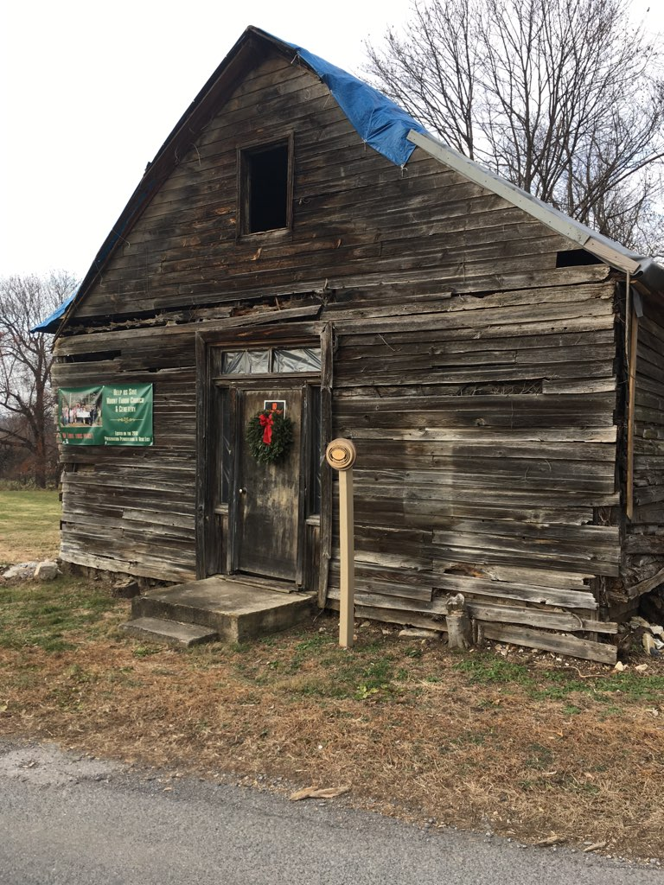
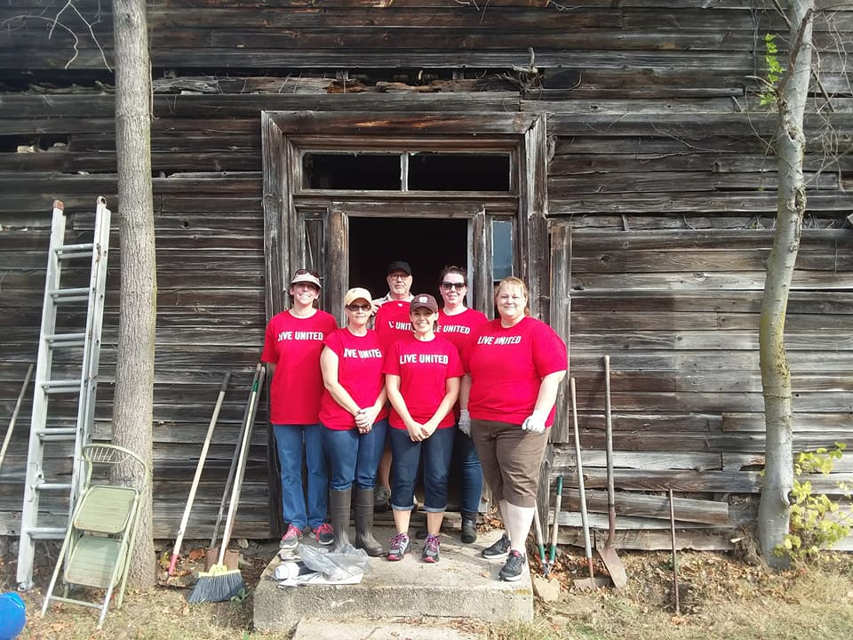

Gathering and belonging
A nineteenth-century place of worship and community life, preserved as a connection to Black history.
Preserve the place. Carry the story forward.
Help sustain a church, a cemetery and the Black community history they hold.
Preservation brings people together around something worth keeping.

A foundation for the next chapter
The project reports completed roof, foundation and structural work. Earlier condition photographs show why careful preservation mattered.


The work has drawn on neighbors, volunteers and preservation professionals. A 2024 Rehabilitation Award recognized the project’s accomplishments.
The people give it purposeThe reason for the work
Family memory helped people reconnect with Mount Tabor.
The Gumby family’s stories and the Ward/Smith family’s cemetery connection remind us that preservation carries lives and relationships forward.
Explore the church and cemetery
History held together
The church and cemetery were listed together in the National Register of Historic Places in 2021.
A nineteenth-century place of worship and community life, preserved as a connection to Black history.
Family histories and USCT veterans connect remembrance to the wider story of this community.
Learning, volunteering and support each offer a way to help carry that history forward.

Be part of the continuing work
Bring your time, a family memory or an interest in learning. Ask how you can connect with the project’s work.
Come closer to the story
Visit the church and cemetery through Mount Tabor’s tours and shared-history programming.
Before coming, check the current schedule and ask about the route, parking and access arrangements.
Plan your visit
13 Cedar Street
Mount Holly Springs, Pennsylvania
Contact the project for the current schedule.
Ask about walking surfaces, parking and available accommodations before your visit.
Help care for what connects us
Your support can help sustain the church, cemetery and the work of sharing Mount Tabor’s history.
Preservation is continuing care. Join the people helping this history remain part of our community’s future.
Donation experience shown for design review.